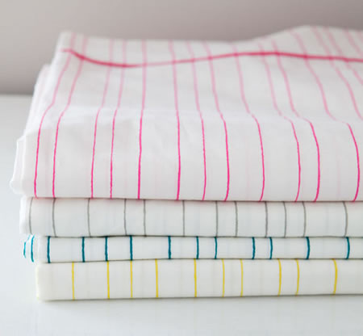

Before & after: painted rug
This section highlights 1930, the year in which Sophie and El Lissitzky's son Jen, was born. Lissitzky created a birth announcement in the form of a photomontage, superimposing an image of the infant Jen over a factory chimney and a whistle. By linking Jen's future with his country's industrial progress, Lissitzky offered a personal endorsement of the Soviet Union. Lissitzky's commissioned designs for the International Hygiene Exhibition in Dresden (1930) and the Fur Trades Exhibition in Leipzig (1930, #122-126) deploy large lettering, photomurals, and startling juxtapositions of real objects with naturalistic and abstract forms to convey an optimism about Soviet developments in social welfare.
This section highlights 1930, the year in which Sophie and El Lissitzky's son Jen, was born. Lissitzky created a birth announcement in the form of a photomontage, superimposing an image of the infant Jen over a factory chimney and a whistle. By linking Jen's future with his country's industrial progress, Lissitzky offered a personal endorsement of the Soviet Union. Lissitzky's commissioned designs for the International Hygiene Exhibition in Dresden (1930) and the Fur Trades Exhibition in Leipzig (1930, #122-126) deploy large lettering, photomurals, and startling juxtapositions of real objects with naturalistic and abstract forms to convey an optimism about Soviet developments in social welfare.
This section highlights 1930, the year in which Sophie and El Lissitzky's son Jen, was born. Lissitzky created a birth announcement in the form of a photomontage, superimposing an image of the infant Jen over a factory chimney and a whistle. By linking Jen's future with his country's industrial progress, Lissitzky offered a personal endorsement of the Soviet Union. Lissitzky's commissioned designs for the International Hygiene Exhibition in Dresden (1930) and the Fur Trades Exhibition in Leipzig (1930, #122-126) deploy large lettering, photomurals, and startling juxtapositions of real objects with naturalistic and abstract forms to convey an optimism about Soviet developments in social welfare.
Obra fotográfica (selección)
This section highlights 1930, the year in which Sophie and El Lissitzky's son Jen, was born. Lissitzky created a birth announcement in the form of a photomontage, superimposing an image of the infant Jen over a factory chimney and a whistle.
- Autorretrato (1924)
- Fotomontaje de Kurt Schwitters (1925)
- Corredor en la ciudad (1928)
- Catálogo de exposición para Iaponskoye kino: Vystavka (Exposición de cine japonés) (1929)
- Montaje de trabajadores y chimeneas, para USSR im bau (1930)
{kind=link}
{kind=link}
{kind=link}
{kind=link}
{kind=link}